사진 한 장, 글 한 줄로 주변 사람들에게 알릴 수 있어요
한 사람의 관심이 잃어버린 가족을 다시 만나게 합니다
봉사와 후원으로 유기동물에게 하루의 평안을 선물해주세요
잃은 마음, 남겨진 마음, 그리고 이어지는 마음들 모두 여기에 있어요
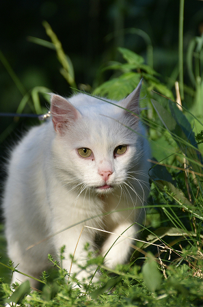
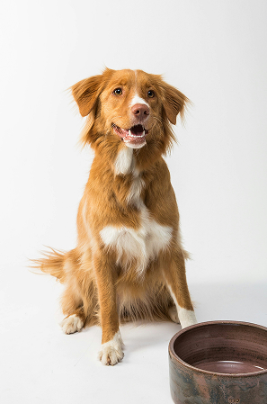
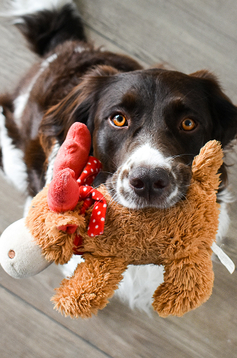
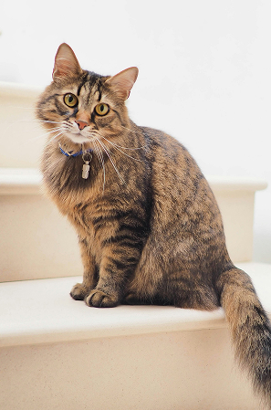
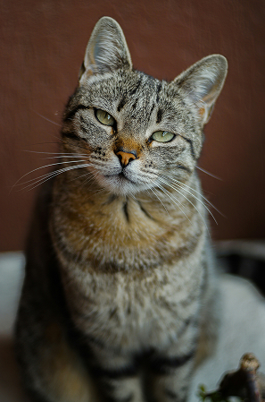
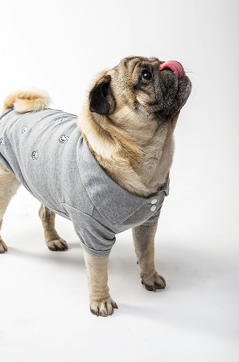
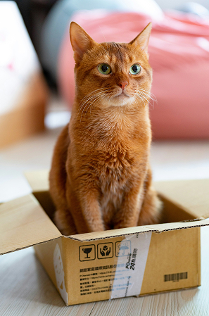
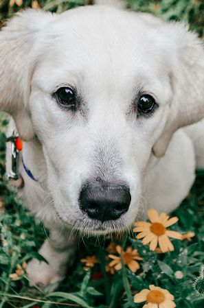
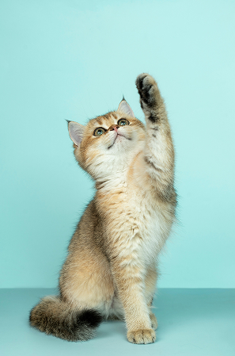
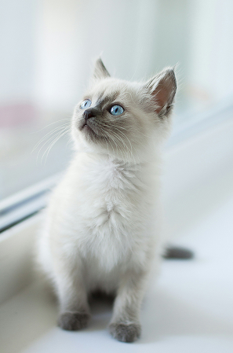
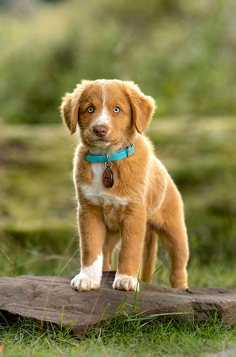
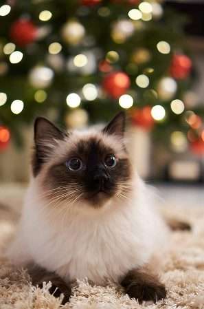
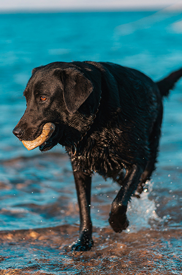
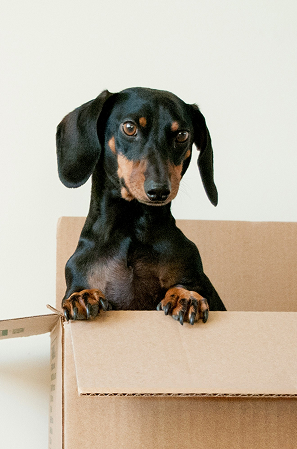
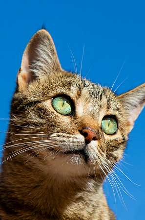
소유자를 알 수 없는 동물을 신고하지 않고 알선·구매하는 경우, 포획하여 팔거나 판매하거나 죽일 목적으로 포획하는 경우에는
동물보호법 제10조제3항제1호·제3호·제4호를 위반하여 2년 이하 징역이나 2천만원 이하 벌금이 부과됩니다
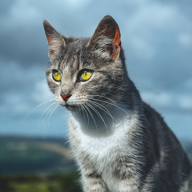
#사지말고입양하세요 안녕하세요? 이쁘고 순한 개냥이 공주에요~♡ 공주는 2개월인 여아에요~~! 혼자 길에서 울고잇어 근처사는 아가씨가 지나가다 구조해서 임보처에 잇어요~~! 실물이 넘이쁜 공주 사람도 고양이도 좋아해요~~^^ 되도록 둘째면 좋겟구요~ 아님 가족들이 잇음 좋겟어요~! 이쁜 공주 안아주세요~! 입양계약서쓰시고 가정방문하구요 ~ 지금 강서구 등촌동에 잇어요~! 서울, 경기도, 인천까지 데려다드려요~~
암컷 6개월
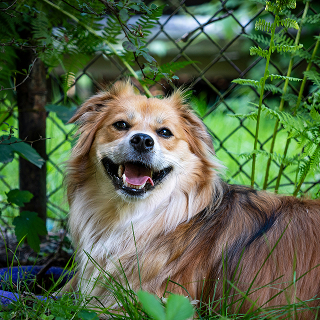
영이의 모견은 삽살개 믹스견으로, 영이 역시 그 피를 이어받아 꼬불거리는 삽살개 특 유의 독특한 비주얼을 갖고 태어났어요. 영이는 사람에게 직접적으로 학대를 받은 기억이 있기 때문에 사람을 두려워하지만, 영이보다 더 심한 학대를 받은 영이의 모견과 형제들도 입양 후 사람과 너무너무 잘 지내고 있기 때문에 영이 역시 시간만 주어진다면 2000% 사람에게 마음의 문을 열 수 있답니다! 영이가 쉼터에서 생을 마감하지 않도록 엄마아빠가 되어주세요. 그저 기다 려주기만 하면 영이의 새로운 세상이 되어주실 수 있어요.
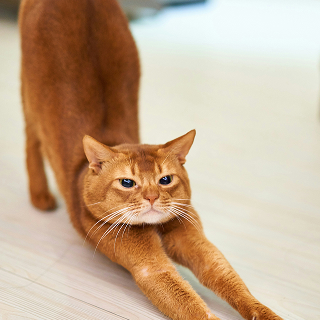
입양갔다가파양된우리말랑이ㅠ 다시좋은가족찾습니다 빗질도하고 쓰담쓰담도 되는 애기를 손안탄다고 파양했어요 그집첫째고양이하고도합사됐던데...뭐가싫었을까요 너무속상하네요 순하고착한욹말랑이다시가족을찾아봅니다ㅠ
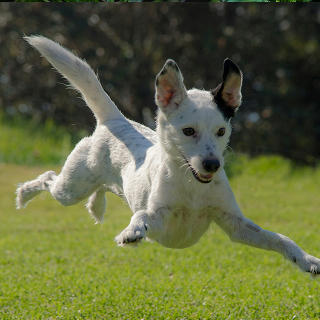
헤이는 한 노인이 잡아먹기 위해 기르던 처참한 환경의 뜬장에서 구출된 아이예요. 강제교배로 인해 다섯 새끼들을 낳은 상태로 폭 염 속에서 발견되었습니다. 물 한 방울 없이 구더기 가득한 음식물 쓰레기로 헤이와 새끼들은 폭염과 한파를 견디고 있었어요. 헤이 는 눈앞에서 친구들이 강제로 끌려가 도살당하고 학대받는 것을 모두 지켜보며 살아왔습니다.
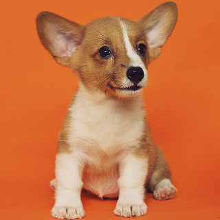
귀여운 베이비페이스의 실험비글 토파즈 3살 추정, 남아, 중성화&접종완료 아담한 체구와 베이비페이스를 가진 천상 모델견 토파즈에요 간식도 좋아하고 사람한테도 잘 다가오지만 세상 많은게 처음이라 처음 듣는 소리에는 조금 민감한 편이랍니다! 이런 토파즈에게 더 넓은 세상을 가르쳐 줄 따듯한 가족 어디 없을까요? * 25세 이상 연락주세요 * 가족들 동의 필수 * 애견물품 준비 확인 후 입양진행 * 입양신청서 작성 * 부재시 문자남겨주세요 * 안락사 보호소에서 구조한 아이들이며 유기동물 비영리 단체입니다.
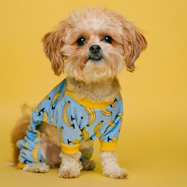
남아 / 3세추정 / 4kg 접종완료, 중성화완료 구조당시 털로 뒤덮혀 있던 버블이.. 이날씨에 얼마나 무더웠을까요ㅠㅠ 지금은 잠깐 검진과 치료를 위해 털을 민 상태인데, 벌써부터 이목구비가 오밀조밀한게 너무 귀엽죠ㅎㅎ 아주 미견이었나봐요~! 버블이는 누군가와 함께 있는 걸 정말 좋아해요 친구들하고도 매너있고 즐겁게 잘 지내고 사람도 좋아해서 졸졸 따라다닌답니다 사랑둥이 버블이의 가족이 되어주실 분 있을까요? * 25세 이상 연락주세요 * 가족들 동의 필수 * 애견물품 준비 확인 후 입양진행 * 입양신청서 작성 * 부재시 문자남겨주세요 * 안락사 보호소에서 구조한 아이들이며 유기동물 비영리 단체입니다.
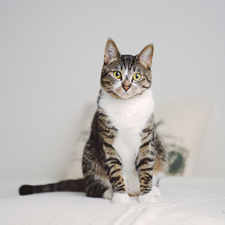
두번 파양의 아픔을 잊고 저도 좋은 가족을 만나고 싶어요. 이름: 보림 성별: 여아 (중성화 완료) 나이: 3살 저는 두 번이나 가족을 만났지만… 두 번 모두 버려졌습니다. 처음엔 사랑받는 줄 알았던 집에서, 어느 날 문득 혼자가 되어버렸어요. 그 이후로 저는 한동안 세상이 조금 무서워졌고, 마음의 문도 꼭 닫아버렸어요. 하지만 다행히도 지금은 따뜻한 쉼터에서 지내며, 다시 웃고, 다시 놀고 있어요. 장난감을 흔들어줄 때면 귀여운 몸짓으로 놀기도 하고, 부드럽게 다가가는 연습도 하고 있답니다. 저도 다른 친구들처럼 평생 안심하고 쉴 수 있는, 그런 집을 만나고 싶어요. 저의 마지막 가족이 되어주실 엄마 아빠를 기다릴게요. 입양이 결정되면 보호자가 직접 두 시간 거리까지 데려다드립니다.
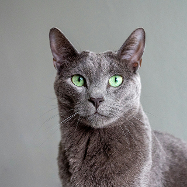
한 번의 아픔을 겪고도 여전히 사람을 믿는 고양이, 코코를 소개합니다. 이름: 코코 성별: 남아 (중성화 완료) 나이: 2살 건강 상태: 중성화 및 접종 완료 코코는 생후 1년 무렵, 한 가정에 입양되었지만 안타깝게도 1년 만에 파양되어 다시 돌아오게 되었습니다. 돌아온 후 한동안은 낯선 공간과 이별의 슬픔에 식음을 전폐하며 힘들어했지만, 시간이 흐르며 조금씩 마음을 열기 시작했습니다. 그리고 지금은 다시, 사람 품을 좋아하고 먼저 다가오는 ‘개냥이’ 코코의 모습으로 돌아왔습니다. 코코는 또래 고양이들보다 몸집이 살짝 크지만, 그만큼 포근한 존재감을 지녔습니다. 아이처럼 천진난만하게 놀고, 아깽이 친구들과도 잘 어울리는 순둥이예요. 유난히 귀여운 채플린 같은 수염과 똘망한 눈빛을 보면, 분명 마음이 사르르 녹을 거예요. 한 번 상처를 받은 만큼, 이번에는 진짜 가족을 만나 평생 사랑받으며 살았으면 합니다. 코코는 누군가에게 소중한 하루하루가 될 준비가 되어 있어요. 입양이 결정되면 직접 데려다 드립니다. (최대 2시간 거리 가능) 신중한 입양, 평생 가족이 되어주실 분만 연락 부탁드립니다.
EVERY PAW DESERVES A WAY HOME EVERY PAW DESERVES A WAY HOME
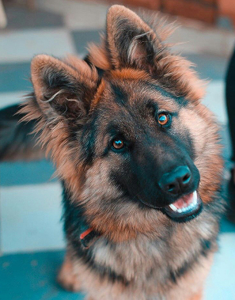
뽀야 처음 데려올땐 눈물자국이 심했는데 지금은 이름처럼 완전 뽀애졌습니다!!!
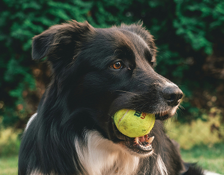
♡구조된 작은 생명, 두부.그리고 끝내 함께하지 못한 두부의 엄마에게 전하는 가족의 마음입니다.♡♡♡🕊 두부의 엄마에게오늘은 두부가 태어난 지 5개월 되는 날이에요.
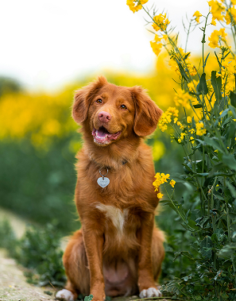
지난달에 무지개 다리를 건넌 저희집 노견 보리가 있었습니다. 슬픔이 가득했고.. 사무치게 그리움이 가득했던 날들.. 정말 이루말할수 없을 정도로 힘들더라구요. 그 친구도 유기견이었고 세살 추정나이에 우리품으로 와서 결혼 출산 육아 지금까지 모든걸 같이 했던 아이라서 더 특별했어요.
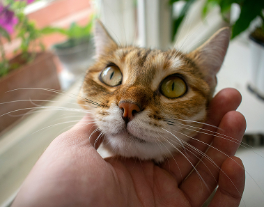
안녕하세요겁이아주아주많은 까망이 근황입니다 ㅎㅎ아직도 사람을 무서워하긴 하는데 아주많이 좋아졌어요!!집안에서도 같이지내고 앞뒷마당에서도 놀고 자유롭게 저희가족과 많이 친해졌어요이제는 간식 손에 올려놓으면 먹으러 오고 아주 많은 발전을 했답니다
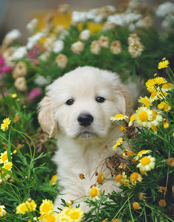
코바와 함께 한 지 벌써 3년이 되었어요~ 코바와 만날 수 있게 해주신 대전동물보호소에 항상 감사한 마음입니다^^ 입양 간 아이들, 보호소에 아직 남아있는 아이들 모두 좋은 인연으로 더욱 행복해지기를 바랍니다!
벌써 짱아와 함께한지 4년이 넘엇어요! 짱아를 맨 처음 봤을때부터 너무너무 귀엽고 참 이쁘구 4년동안 제 가족이 되어주고 제 곁에 늘 함께해줘서 너무너무 고마운 우리 짱아!너무 못 챙겨주고 사랑 많이 못 줘서 미안한 마음만 가득해요..
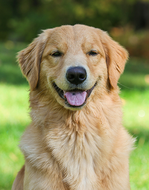
올해 초에 입양 후 이제 가을을 같이 맞이 하고 있습니다. 홀씨같던 삐죽 털들이 점점 길어져서 화려한 장식털처럼 되어가고 있어요. 몸무게도 벌써 13kg을 향해 가고 있고, 딴딴한 근육 강쥐가 되고 있습니다ㅎㅎ 믹스견 답게 커가면서 생김새가 예측 불가능하게 변하는데, 그게 또 다 귀엽고, 지나고 나면 그 모습도 정말 잠깐이라 소중하고 그렇습니다.
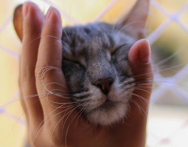
겁이 많다고 하셔서 혹시 새로운 환경에 적응하지 못할까봐 걱정했는데 걱정이 무색할 정도로 아주아주 잘 적응했어요ㅎㅎ 산책도 너무 좋아하고 똑똑해서 배변훈련도 이틀만에 성공했답니다! 2년 동안 보러온 사람이 아무도 없었다고 하셔서 처음엔 의아했는데 나랑 만나려고 그랬나보다! 생각이 들어요 ㅎㅎ